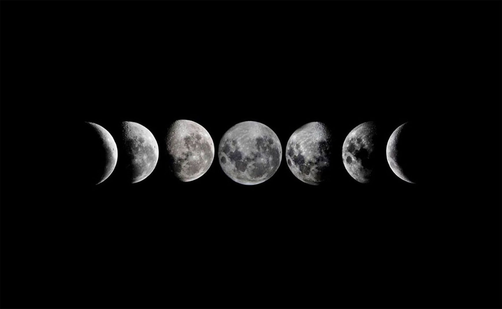
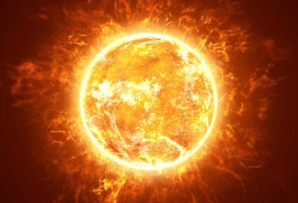

Sky
Etymology
The word sky comes from the Old Norse sky, meaning 'cloud, abode of God'. The Norse term is also the source of the Old English scēo, which shares the same Indo-European base as the classical Latin obscūrus, meaning 'obscure'. In Old English, the term heaven was used to describe the observable expanse above the earth. Throughout mentions in Middle English, it was gradually restricted to its current, religious meaning.[6
During the time
Except for direct sunlight, most of the light in the daytime sky is caused by scattering, which is dominated by a small-particle limit called Rayleigh scattering. The scattering due to molecule-sized particles (as in air) is greater in the directions both toward and away from the source of light than it is in directions perpendicular to the incident path.[7] Scattering is significant for light at all visible wavelengths, but is stronger at the shorter (bluer) end of the visible spectrum, meaning that the scattered light is bluer than its source: the Sun. The remaining direct sunlight, having lost some of its shorter-wavelength components, appears slightly less blue.[5] Scattering also occurs even more strongly in clouds. Individual water droplets refract white light into a set of colored rings. If a cloud is thick enough, scattering from multiple water droplets will wash out the set of colored rings and create a washed-out white color.[clarification needed][8]. The sky can turn a multitude of colors such as red, orange, purple, and yellow (especially near sunset or sunrise) when the light must travel a much longer path (or optical depth) through the atmosphere. Scattering effects also partially polarize light from the sky and are most pronounced at an angle 90° from the Sun. Scattered light from the horizon travels through as much as 38 times the air mass as does light from the zenith, causing a blue gradient looking vivid at the zenith and pale near the horizon.[9] Red light is also scattered if there is enough air between the source and the observer, causing parts of the sky to change color as the Sun rises or sets. As the air mass nears infinity, scattered daylight appears whiter and whiter.[10] Apart from the Sun, distant clouds or snowy mountaintops may appear yellow. The effect is not very obvious on clear days, but is very pronounced when clouds cover the line of sight, reducing the blue hue from scattered sunlight.[10] At higher altitudes, the sky tends toward darker colors since scattering is reduced due to lower air density. An extreme example is the Moon, where no atmospheric scattering occurs, making the lunar sky black even when the Sun is visible.[11] Sky luminance distribution models have been recommended by the International Commission on Illumination (CIE) for the design of daylighting schemes. Recent developments relate to "all sky models" for modelling sky luminance under weather conditions ranging from clear to overcast.[12]
During twilight
The brightness and color of the sky vary greatly over the course of a day, and the primary cause of these properties differs as well. When the Sun is well above the horizon, direct scattering of sunlight (Rayleigh scattering) is the overwhelmingly dominant source of light. However, during twilight, the period between sunset and night or between night and sunrise, the situation is more complex.Green flashes and green rays are optical phenomena that occur shortly after sunset or before sunrise, when a green spot is visible above the Sun, usually for no more than a second or two, or it may resemble a green ray shooting up from the sunset point. Green flashes are a group of phenomena that stem from different causes,[14] most of which occur when there is a temperature inversion (when the temperature increases with altitude rather than the normal decrease in temperature with altitude). Green flashes may be observed from any altitude (even from an aircraft). They are usually seen above an unobstructed horizon, such as over the ocean, but are also seen above clouds and mountains. Green flashes may also be observed at the horizon in association with the Moon and bright planets, including Venus and Jupiter.[15][16] Earth's shadow is the shadow that the planet casts through its atmosphere and into outer space. This atmospheric phenomenon is visible during civil twilight (after sunset and before sunrise). When the weather conditions and the observing site permit a clear view of the horizon, the shadow's fringe appears as a dark or dull bluish band just above the horizon, in the low part of the sky opposite of the (setting or rising) Sun's direction. A related phenomenon is the Belt of Venus (or antitwilight arch), a pinkish band that is visible above the bluish band of Earth's shadow in the same part of the sky. No defined line divides Earth's shadow and the Belt of Venus; one colored band fades into the other in the sky.[17][18] Twilight is divided into three stages according to the Sun's depth below the horizon, measured in segments of 6°. After sunset, the civil twilight sets in; it ends when the Sun drops more than 6° below the horizon. This is followed by the nautical twilight, when the Sun is between 6° and 12° below the horizon (depth between −6° and −12°), after which comes the astronomical twilight, defined as the period between −12° and −18°. When the Sun drops more than 18° below the horizon, the sky generally attains its minimum brightness.[19] Several sources can be identified as the source of the intrinsic brightness of the sky, namely airglow, indirect scattering of sunlight, scattering of starlight, and artificial light pollution.
Moon
The Moon is Earth's only natural satellite. It is the fifth largest satellite in the Solar System and the largest and most massive relative to its parent planet,[f] with a diameter about one-quarter that of Earth (comparable to the width of Australia).[16] The Moon is a planetary-mass object with a differentiated rocky body, making it a satellite planet under the geophysical definitions of the term and larger than all known dwarf planets of the Solar System.[17] It lacks any significant atmosphere, hydrosphere, or magnetic field. Its surface gravity is about one-sixth of Earth's at 0.1654 g, with Jupiter's moon Io being the only satellite in the Solar System known to have a higher surface gravity and density. The Moon orbits Earth at an average distance of 384,400 km (238,900 mi), or about 30 times Earth's diameter. Its gravitational influence is the main driver of Earth's tides and very slowly lengthens Earth's day. The Moon's orbit around Earth has a sidereal period of 27.3 days. During each synodic period of 29.5 days, the amount of visible surface illuminated by the Sun varies from none up to 100%, resulting in lunar phases that form the basis for the months of a lunar calendar. The Moon is tidally locked to Earth, which means that the length of a full rotation of the Moon on its own axis causes its same side (the near side) to always face Earth, and the somewhat longer lunar day is the same as the synodic period. However, 59% of the total lunar surface can be seen from Earth through cyclical shifts in perspective known as libration. The most widely accepted origin explanation posits that the Moon formed 4.51 billion years ago, not long after Earth, out of the debris from a giant impact between the planet and a hypothesized Mars-sized body called Theia. It then receded to a wider orbit because of tidal interaction with the Earth. The near side of the Moon is marked by dark volcanic maria ("seas"), which fill the spaces between bright ancient crustal highlands and prominent impact craters. Most of the large impact basins and mare surfaces were in place by the end of the Imbrian period, some three billion years ago. The lunar surface is fairly non-reflective, with the reflectance of lunar soil being comparable to that of asphalt. However, due to its large angular diameter, the full moon is the brightest celestial object in the night sky. The Moon's apparent size is nearly the same as that of the Sun, allowing it to cover the Sun almost completely during a total solar eclipse. Both the Moon's prominence in Earth's sky and its regular cycle of phases have provided cultural references and influences for human societies throughout history. Such influences can be found in language, calendar systems, art, and mythology. The first artificial object to reach the Moon was the Soviet Union's uncrewed Luna 2 spacecraft in 1959; this was followed by the first successful soft landing by Luna 9 in 1966. The only human lunar missions to date have been those of the United States' Apollo program, which landed twelve men on the surface between 1969 and 1972. These and later uncrewed missions returned lunar rocks that have been used to develop a detailed geological understanding of the Moon's origins, internal structure, and subsequent history. The Moon is the only celestial body visited by humans.
Names and etymology
The usual English proper name for Earth's natural satellite is simply Moon, with a capital M.[18][19] The noun moon is derived from Old English mōna, which (like all its Germanic cognates) stems from Proto-Germanic *mēnōn,[20] which in turn comes from Proto-Indo-European *mēnsis "month"[21] (from earlier *mēnōt, genitive *mēneses) which may be related to the verb "measure" (of time).[22]Occasionally, the name Luna /ˈluːnə/ is used in scientific writing[23] and especially in science fiction to distinguish the Earth's moon from others, while in poetry "Luna" has been used to denote personification of the Moon.[24] Cynthia /ˈsɪnθiə/ is another poetic name, though rare, for the Moon personified as a goddess,[25] while Selene /səˈliːniː/ (literally "Moon") is the Greek goddess of the Moon.The usual English adjective pertaining to the Moon is "lunar", derived from the Latin word for the Moon, lūna. The adjective selenian /səliːniən/,[26] derived from the Greek word for the Moon, σελήνη selēnē, and used to describe the Moon as a world rather than as an object in the sky, is rare,[27] while its cognate selenic was originally a rare synonym[28] but now nearly always refers to the chemical element selenium.[29] The Greek word for the Moon does however provide us with the prefix seleno-, as in selenography, the study of the physical features of the Moon, as well as the element name selenium.[30][31]The Greek goddess of the wilderness and the hunt, Artemis, equated with the Roman Diana, one of whose symbols was the Moon and who was often regarded as the goddess of the Moon, was also called Cynthia, from her legendary birthplace on Mount Cynthus.[32] These names – Luna, Cynthia and Selene – are reflected in technical terms for lunar orbits such as apolune, pericynthion and selenocentric.
Sun
The Sun is the star at the center of the Solar System. It is a nearly perfect ball of hot plasma,[18][19] heated to incandescence by nuclear fusion reactions in its core. The Sun radiates this energy mainly as light, ultraviolet, and infrared radiation, and is the most important source of energy for life on Earth. The Sun's radius is about 695,000 kilometers (432,000 miles), or 109 times that of Earth. Its mass is about 330,000 times that of Earth, comprising about 99.86% of the total mass of the Solar System.[20] Roughly three-quarters of the Sun's mass consists of hydrogen (~73%); the rest is mostly helium (~25%), with much smaller quantities of heavier elements, including oxygen, carbon, neon, and iron.[21]The Sun is a G-type main-sequence star (G2V), informally called a yellow dwarf, though its light is actually white. It formed approximately 4.6 billion[a][14][22] years ago from the gravitational collapse of matter within a region of a large molecular cloud. Most of this matter gathered in the center, whereas the rest flattened into an orbiting disk that became the Solar System. The central mass became so hot and dense that it eventually initiated nuclear fusion in its core. It is thought that almost all stars form by this process.Every second, the Sun's core fuses about 600 million tons of hydrogen into helium, and in the process converts 4 million tons of matter into energy. This energy, which can take between 10,000 and 170,000 years to escape the core, is the source of the Sun's light and heat. When hydrogen fusion in its core has diminished to the point at which the Sun is no longer in hydrostatic equilibrium, its core will undergo a marked increase in density and temperature while its outer layers expand, eventually transforming the Sun into a red giant. It is calculated that the Sun will become sufficiently large to engulf the current orbits of Mercury and Venus, and render Earth uninhabitable in five billion years. After this, it will shed its outer layers and become a dense type of cooling star known as a white dwarf, and no longer produce energy by fusion, but still glow and give off heat from its previous fusion.The enormous effect of the Sun on Earth has been recognized since prehistoric times. The Sun was thought of by some cultures as a deity. The synodic rotation of Earth and its orbit around the Sun are the basis of some solar calendars. The predominant calendar in use today is the Gregorian calendar which is based upon the standard 16th-century interpretation of the Sun's observed movement as actual movement.[23]
Etymology
The English word sun developed from Old English sunne. Cognates appear in other Germanic languages, including West Frisian sinne, Dutch zon, Low German Sünn, Standard German Sonne, Bavarian Sunna, Old Norse sunna, and Gothic sunnō. All these words stem from Proto-Germanic *sunnōn.[24][25] This is ultimately related to the word for sun in other branches of the Indo-European language family, though in most cases a nominative stem with an l is found, rather than the genitive stem in n, as for example in Latin sōl, ancient Greek ἥλιος (hēlios), Welsh haul and Czech slunce, as well as (with *l > r) Sanskrit स्वर (svár) and Persian خور (xvar). Indeed, the l-stem survived in Proto-Germanic as well, as *sōwelan, which gave rise to Gothic sauil (alongside sunnō) and Old Norse prosaic sól (alongside poetic sunna), and through it the words for sun in the modern Scandinavian languages: Swedish and Danish sol, Icelandic sól, etc.[25]The principal adjectives for the Sun in English are sunny for sunlight and, in technical contexts, solar (/ˈsoʊlər/),[3] from Latin sol[26] – the latter found in terms such as solar day, solar eclipse and Solar System (occasionally Sol system). From the Greek helios comes the rare adjective heliac (/ˈhiːliæk/).[27] In English, the Greek and Latin words occur in poetry as personifications of the Sun, Helios (/ˈhiːliəs/) and Sol (/ˈsɒl/),[2][1] while in science fiction Sol may be used as a name for the Sun to distinguish it from other stars. The term sol with a lower-case s is used by planetary astronomers for the duration of a solar day on another planet such as Mars.[28]The English weekday name Sunday stems from Old English Sunnandæg "sun's day", a Germanic interpretation of the Latin phrase diēs sōlis, itself a translation of the ancient Greek ἡμέρα ἡλίου (hēmera hēliou) 'day of the sun'.[29] The astronomical symbol for the Sun is a circle with a center dot, ☉. It is used for such units as M☉ (Solar mass), R☉ (Solar radius) and L☉ (Solar luminosity).